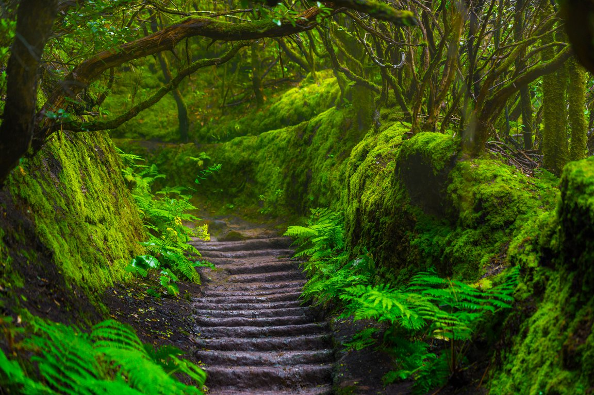
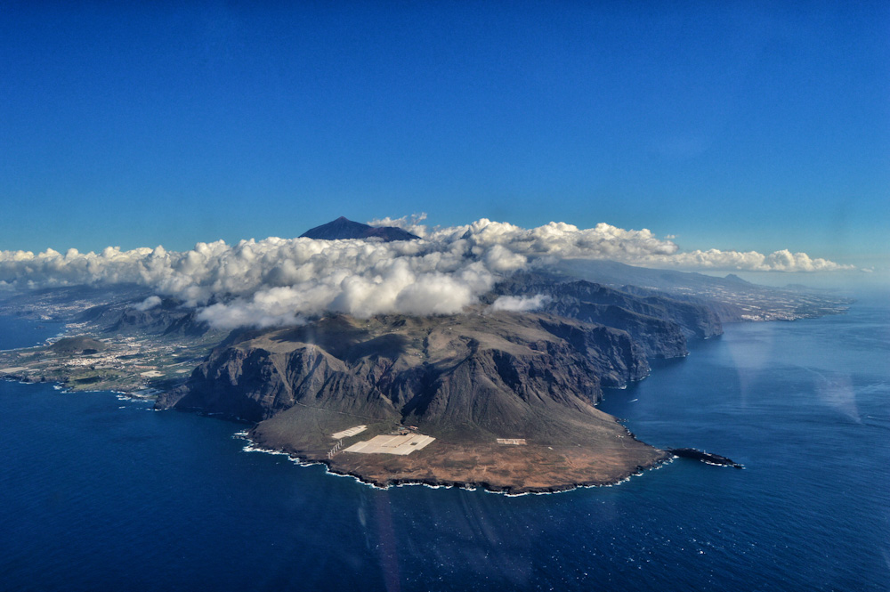
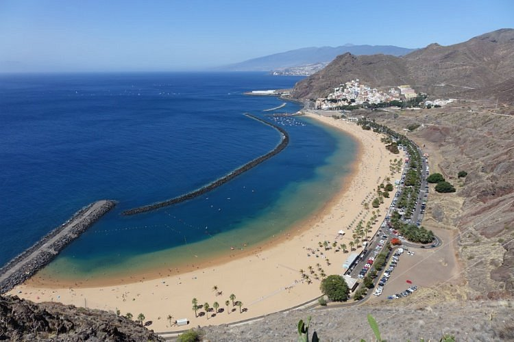
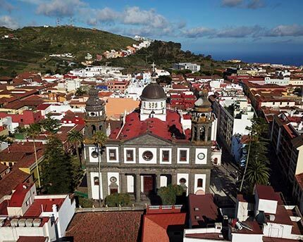

Y Estos son los Lugares de Interés
Puntos de Interés, Puedes Hacer Click Sobre el Teide para Visitarlo.
- El Teide, El pico más alto de España

- Anaga, Bosque Mágico
- Teno uno de los Primeros Macizos.
- Los Gigantes

| Playas | Montaña | Laurisilva | Ciudades |
|---|---|---|---|
| Las Teresitas | Teide |
Anaga | La Laguna |
| Las Vistas | Montaña Mostaza |
Teno | Santa Cruz |
| La Arena | Roque del Conde |
Ravelo | Puerto de la Cruz |
| Costa Adeje | Montaña Guajara |
La Vica | La Orotava |